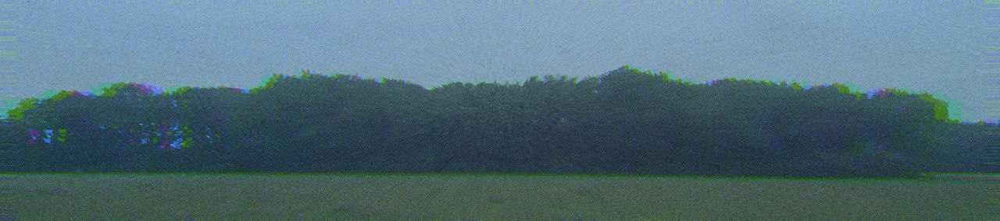

Аяко
Следы и шёпот
Вечерами у места её смерти земля холодна и влажна, словно из неё всё ещё сочится кровь. Следы Аяко появляются внезапно — глубокие отпечатки босых ног, которые ведут вглубь леса и внезапно исчезают, будто она растворяется в воздухе.
— Свидетели рассказывают, что её голос доносится сквозь шум ветра — тихий, хриплый шёпот, повторяющий их имена, пробуждающий самые мрачные страхи и заставляющий сердце колотиться в груди.
— Иногда в кромешной тьме леса мелькают тени, которые повторяют движения Аяко, но их глаза горят кроваво-красным светом. Они не просто призраки — это отражения её вечной боли и ярости.
— Говорят, что прикосновение Аяко — ледяное, и те, кого она коснётся, ощущают, как будто жизнь утекает из них вместе с теплом. После этого начинается мучительная потеря времени и памяти, а затем — полное исчезновение.
— Вороны, которые каркают над местом её проклятия, не обычные птицы. Это души погибших, заточённых в теле черных пернатых стражей, которые охраняют лес и поддерживают власть Аяко над тьмой.
Последние секунды перед исчезновением
Когда Аяко приближается, мир вокруг начинает искажаться. Взгляд жертвы застилает туман, а звуки превращаются в глухой отголосок, словно земля и небо отделяются друг от друга.
В эти мгновения перед затягиванием в мрак, жертва видит, как её собственные тени расползаются по земле, словно живые существа с острыми когтями, которые пытаются оторваться и бежать. Но они цепляются и тянут обратно.
Вдруг в тишине слышится её собственный голос — шепот, искажённый до неузнаваемости, который зовёт на помощь и одновременно проклинает. В глазах появляется странное отражение — лес становится живым, деревья склоняются и тянутся к жертве, будто хотят впитать её душу.
Прикосновение Аяко — ледяное и тяжёлое, как смерть сама. Кажется, будто жизнь утекает не только из тела, но и из сознания. В этот момент воображение рисует последние воспоминания — лица близких, светлые дни, детский смех, — но они вдруг становятся далёкими и мимолётными, словно сквозь плотную пелену ужаса.
Последним, что ощущает жертва, становится холод и бескрайняя темнота, в которую она погружается навсегда. Вместо тела остаётся только холодный шорох листьев и тихий, пронзительный карканье ворон.
Она может взять голос
Один из самых страшных фактов, который редко обсуждают вслух: Аяко может "вынуть" твой голос, оставить тебя снаружи — пустым, а его — у себя.
Говорят, если в лесу ты услышишь, как кто-то зовёт тебя твоим же голосом, но из другой стороны тропы — уходи немедленно. Потому что если ответишь, она "услышит", как звучит твоя душа. И в эту же ночь ты начнёшь терять речь.
Сначала — запинания.
Потом — ты задыхаешься от собственной фразы.
Через день — тишина. Полная. Даже в мыслях.
Но самое страшное начинается позже.
Соседи, близкие, случайные прохожие начинают слышать твой голос, когда ты далеко.
Он звучит в радиопомехах. Из выключенных колонок.
Иногда — шепчет им твои мысли раньше, чем ты сам их сформулировал.
Потому что теперь она говорит от твоего имени.
И в глубине леса стоит тихая фигура в изорванном кимоно,
а если прислушаться — она поёт твоим голосом.
